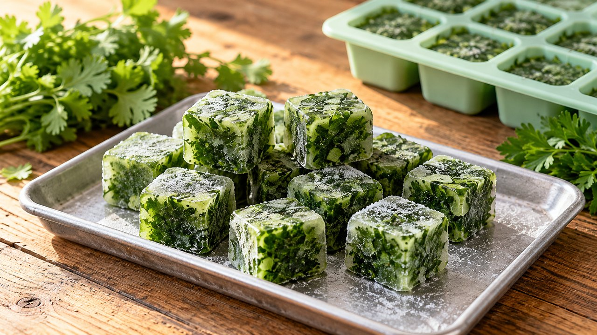

Cilantro and Parsley Freezer Portions
Versatile · Freezing · About 15 min active prep; total estimate 4 hr 15 min including freezing. Follow the doneness endpoint rather than the clock.
Yield: Variable; label each portion by measured spoonful

Ingredients
- 2 oz fresh cilantro, flat-leaf parsley or garlic chives
- Water, only if using the optional cube method
Directions
- Pick out damaged leaves. Rinse herbs, drain and dry thoroughly. Use cilantro and parsley separately if you want distinct flavors.
- For the plain pack, chop the herbs. Spread a thin layer on a lined freezer tray and freeze until firm. Break into portions and immediately seal in a labeled freezer bag with excess air removed.
- Alternatively, loosely pack chopped herbs into clean small ice-cube wells and add just enough water to cover. Freeze solid, then transfer cubes to a labeled freezer bag.
- Keep frozen and add directly to hot soup, beans or rice. The herbs soften after thawing and are not a fresh-garnish substitute.
Notes & serving ideas
Garlic chives can be used as a separate culinary herb portion. The water-cube variation is an original convenience method; the reference supports freezing fresh herbs generally. Freeze promptly after preparation.
Harvest reference batch: 2 oz cilantro. Only this primary crop is deducted; secondary ingredients and finished yields are not calculated.
Review & safe storage
Original recipe: Family Recipes culinary preparation informed by the references below; the exact formula and storage life have not been laboratory validated or kitchen-tested here. References do not validate it for canning.
Keep frozen at 0°F (−18°C) or below. Thaw in the refrigerator at 40°F (4°C) or below, or use directly in cooking as directed. Use thawed portions within 3 days as a conservative household practice. This recipe is not shelf-stable.
Work with clean hands, sound produce and clean equipment. Refrigerate prepared perishables promptly, within 2 hours (1 hour above 90°F / 32°C); cool hot mixtures in shallow small containers. Never thaw perishables on the counter.